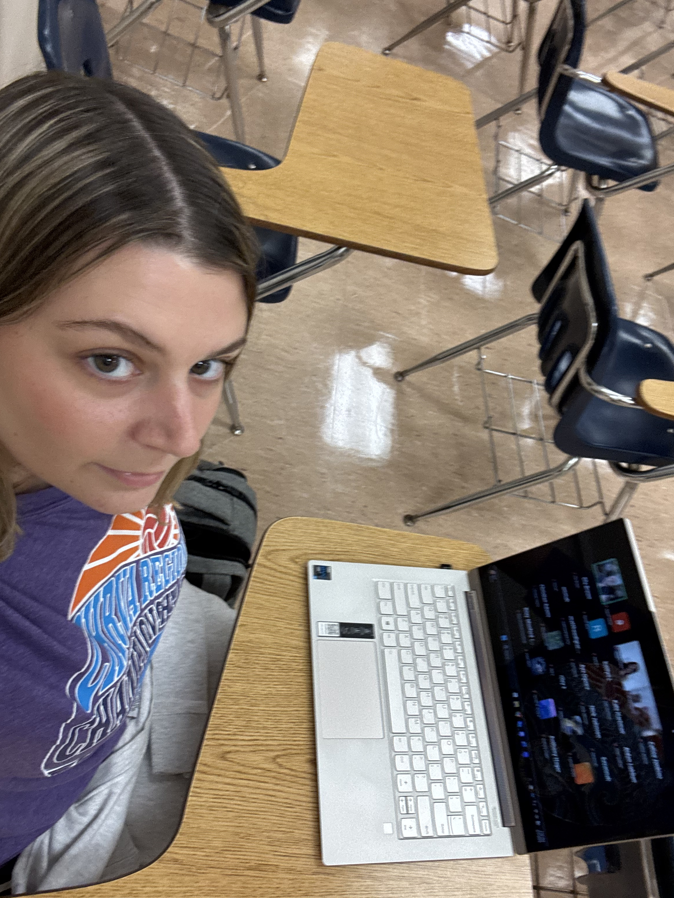

Breaking News: Alyson Finally Gets 8 Hours of Sleep
In an unprecedented turn of events late Tuesday night, local college student Alyson reportedly achieved a full eight hours of sleep, leaving friends, classmates, and campus observers both shocked and impressed. Sources say the rare occurrence followed a long stretch of late-night assignments, scrolling through social media, and promising herself “just one more episode” before bed.
See More Updates →
Coffee Consumption Reaches Record High
Coffee consumption among local college student Alyson has reportedly reached an all-time high this semester, according to sources close to her daily routine. With early classes, assignments, and social media work filling her schedule, coffee has quickly become an essential part of her productivity strategy.
Read More Here→
Campus Intramural Pickleball Team Wins First Game of the Season
Local college student Alyson and her teammates scored an impressive victory in their first intramural Pickleball game of the semester, leaving fans and fellow students cheering.
See More Updates →

End of an Era: Student Experiences “First Last Day” of College, Emotions Mixed
In a bittersweet start to senior year, local student Alyson attended her first “last first day” of college, balancing excitement for the future with disbelief that it’s all coming to an end. While she arrived with the usual back-to-school energy—smiling, chatting with friends, and carrying a carefully curated selection of notebooks and coffee cups—sources say the reality of final classes, last assignments, and the looming prospect of graduation has yet to fully sink in. Between navigating crowded hallways, catching up with professors she’s known for years, and taking selfies in familiar corners of campus, Alyson reportedly experienced waves of nostalgia mixed with anxious anticipation for the next chapter. Experts confirm that this stage of college life is often marked by a complicated blend of motivation, sentimentality, and mild denial, as students struggle to reconcile the excitement of future opportunities with the finality of leaving behind the routines, friendships, and everyday moments that have defined their undergraduate experience. Observers note that moments like these are both deeply personal and universally relatable, serving as a reminder that endings often carry the weight of reflection as much as the promise of new beginnings.

Breaking News: Student Logs Into Zoom Class On Time for First Time All Semester
In a surprising turn of events, local college student Alyson reportedly joined her Zoom class before it even started, logging in a full two minutes early. Known for her usual last-second arrivals and quick “sorry, my WiFi was acting up” excuse, today’s early appearance left classmates shocked. Experts are unsure whether this marks a new level of productivity or was simply an accidental moment of responsibility.
Another Story: Campus Cafe Runs Out of Coffee
Students were shocked to discover the campus cafe ran out of coffee during peak hours. Early reports suggest an unprecedented spike in caffeine consumption coinciding with midterms week.
Upcoming Event: Spring Festival Announced
The university announced this year’s Spring Festival will be bigger than ever. Students can expect games, live music, and plenty of free snacks.